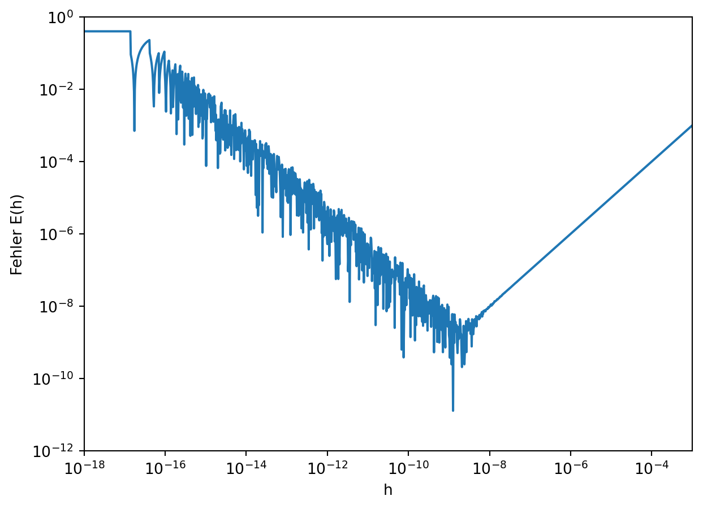

Bevor wir uns mit den konkreten Implementationen von algorithmischer Differentiation beschäftigen, wollen wir herausstellen, was AD nicht ist.
2.1 AD ist nicht numerisches Ableiten
Eine Funktion \(y = f(x)\) ist bekanntlich differenzierbar an der Stelle \(x_0 \in \mathbb{D}\), wenn der Grenzwert \[ \lim_{h\rightarrow 0} \frac{f(x_0 + h) - f(x_0)}{h} \] existiert. In dem Fall ist \(f'(x_0)\) einfach der Wert dieses Grenzwerts.
Ein erster Ansatz zur numerischen Berechnung könnte also sein, den Differenzenquotienten für kleine \(h\) auszuwerten1.
Beispiel 2.1 (Numerische Ableitung) Leite die Funktion \(f(x) = x^2\) an der Stelle \(x_0 = 2\) ab.
h = 0.1 => f'(x0) = 0.5000000000000001
h = 0.01 => f'(x0) = 0.4099999999999999
h = 0.001 => f'(x0) = 0.4009999999999986
h = 0.0001 => f'(x0) = 0.40009999999993107
Es scheint zunächst, als ob die Werte für kleiner werdende \(h\) zum korrekten Wert \(f'(0.2)=0.4\) konvergieren. Wenn wir aber an sehr genauen Werten interessiert sind und entsprechen \(h\) sehr klein wählen, beobachten wir folgendes:
Code
def f(x): y = x **2return ydef fdot(f, x0, h): df = (f(x0 + h) - f(x0)) / hreturn dfx0 =0.2H = [10**-8, 10**-9, 10**-10, 10**-11]for h in H: ydot = fdot(f, x0, h)print("h = "+str(h) +"\t=> f'(x0) = "+str(ydot))
h = 1e-08 => f'(x0) = 0.4000000095039091
h = 1e-09 => f'(x0) = 0.3999999984016789
h = 1e-10 => f'(x0) = 0.4000000330961484
h = 1e-11 => f'(x0) = 0.3999994779846361
Das Phänomen wird noch deutlicher, wenn wir den Fehler \(E(h) = \lvert\frac{f(x_0+h)-f(x_0)}{h} - f'(x_0)\rvert\) als Funktion von \(h\) plotten. Beachte die doppelt logarithmische Skala.
Code
import matplotlib.pyplot as pltimport mathdef f(x): y = x **2return ydef fdot(f, x0, h): df = (f(x0 + h) - f(x0)) / hreturn dfx0 =0.2H = [10**(k/100) for k inrange(-1800, -300)]E = [math.fabs(fdot(f, x0, h) -2*x0) for h in H]# Plotfig = plt.figure()ax = fig.add_axes([0.1, 0.1, 0.8, 0.8])ax.set(xlim=(10**-18, 10**-3), ylim=(10**-12, 10**0))ax.set_xscale('log')ax.set_xlabel('h')ax.set_yscale('log')ax.set_ylabel('Fehler E(h)')plt.plot(H,E)plt.show()

Abbildung 2.1: Grösse des Fehlers \(E(h)\) als Funktion der Schrittweite \(h\). Ist \(h\) zu gross, dann ist der Näherungswert für \(f'(x_0)\) ungenau. Bei kleiner werdendem \(h\) nimmt der Fehler zunächst ab, aber ab einem gewissen Wert dominiert die Auslöschung und der Fehler nimmt wieder zu.
2.1.1 Auslöschung
Im vorherigen Beispiel haben wir das Phänomen der Auslöschung beobachtet. Zunächst ist dir sicher aufgefallen, dass der Näherungswert für \(f'(x_0)\) mit \(h=0.01\) nicht \[ \frac{f(x_0 + h) - f(x_0)}{h} = \frac{0.21^2 - 0.2^2}{0.01}=0.41\] ergab, sondern \(f'(x_0)\approx 0.40999...\). Das liegt daran, dass Dezimalzahlen nicht exakt als Binärzahl dargestellt werden können. Da nun die Werte von \(f(x_0) + h\) und \(f(x_0)\) für kleine \(h\) fast gleich sind, setzt sich ihre Differenzu nur noch aus ihren Rundungsfehlern zusammen. Diese (sinnlose) Differenz ist zwar sehr klein, wird aber im nächsten Schritt mit der sehr grossen Zahl \(\frac{1}{h}\) multipliziert, wodurch die Rundungsfehler die gleiche Grössenordnung annehmen, wie die ursprünglichen Funktionswerte. Mehr über Rundungsfehler und Auslöschung kann in Weitz (2021) ab S. 117 nachgelesen werden.
2.2 AD ist nicht symbolisches Ableiten
Computer Algebra Systeme (CAS) sind Programme zur Bearbeitung algebraischer Ausdrücke.
Dieser Ansatz kann verbessert werden indem man z.B. \(f'(x_0) \approx \frac{f(x_0 + h) - f(x_0 - h)}{2h}\) verwendet. Die im Beispiel beschriebenen Probleme bleiben aber auch dann bestehen.↩︎